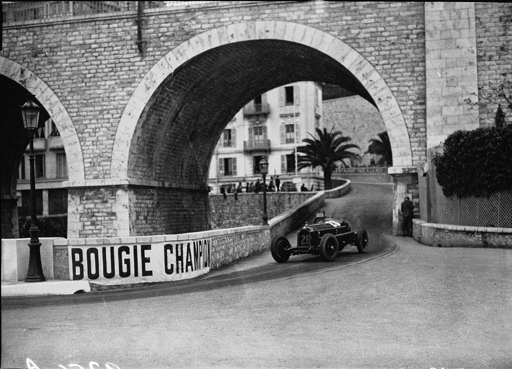

Historia de la Formula 1
-
El Campeonato Mundial de Fórmula 1 de la FIA, más conocido como Fórmula 1, es la competición reina de automovilismo internacional y el campeonato de deportes de motor más popular y prestigioso del mundo. La entidad que la dirige es la Federación Internacional del Automóvil (FIA). Desde septiembre del 2016, tras la adquisición de Formula One Group, la empresa estadounidense Liberty Media es la responsable de gestionar y operar el campeonato.

A cada carrera se le denomina Gran Premio y el torneo que las agrupa es el Campeonato Mundial de Fórmula 1. La mayoría de los circuitos de carreras donde se celebran los Grandes Premios son autódromos, aunque también se utilizan circuitos callejeros y en el pasado se utilizaron circuitos ruteros. A su vez, los automóviles utilizados son monoplazas con la última tecnología disponible, siempre limitados por un reglamento técnico (algunas mejoras que fueron desarrolladas en la Fórmula 1 terminaron siendo utilizadas en automóviles comerciales, como el freno de disco).
El inicio de la Fórmula 1 moderna se remonta al año 1950, en el que participaron escuderías como Ferrari, Alfa Romeo y Maserati. Algunas fueron reemplazadas por otras nuevas como McLaren, Williams, Red Bull y otras que volvieron como Mercedes se han alzado varias veces con el Campeonato Mundial de Constructores. Por su parte, los pilotos deben contar con la superlicencia de la FIA para competir, que se obtiene por los resultados en otros campeonatos.
-
INICIO Y CAMPEONATO
Las carreras de Gran Premio tienen sus raíces en las carreras automovilísticas surgidas en Francia en 1894. En un principio se trataba de eventos individuales, sin conexión y en caminos de tierra, prácticamente sin ninguna limitación. De 1927 a 1934, el número de carreras consideradas Gran Premio creció hasta alcanzar dieciocho en 1934, el máximo antes de la Segunda Guerra Mundial.
Fuente: De Agence de presse Meurisse - Bibliothèque nationale de France, Dominio público.
En 1945, inmediatamente después de la Segunda Guerra Mundial, sólo hubo cuatro carreras. Antes de la Segunda Guerra Mundial se habían establecido las reglas para las competiciones de Grand Prix, que debían obedecer tanto autos como pilotos. Estas reglas, conocidas en su conjunto como Fórmula, no se concretaron hasta que en 1947 la antigua AIACR se reorganizó, pasándose a llamar la Federación Internacional del Automóvil, conocida por las siglas "FIA". Con sede central en París, al final de la temporada de 1949 anunció que para 1950 unirían varios Grandes Premios nacionales para crear un Campeonato Mundial de Pilotos, por lo que en 1950 se celebró el primer campeonato de Fórmula 1. Por motivos económicos, en los años de 1952 y 1953 todavía se compitió con coches de Fórmula 2 y el calendario continuó incluyendo varias carreras que no eran consideradas Grandes Premios hasta 1983. Se estableció un sistema de puntuación y se reconocieron un total de siete carreras como aptas para el Campeonato del Mundo.
-
"BÓLIDOS" Y PRIMERAS CARRERAS
Durante los años 50. la industria automotor da su primer gran salto. Conforme las armadoras comenzaron a crear distintos motores, nacieron intrépidos pilotos que ayudados por sus amigos mecánicos, modificaban sus autos para hacerlos más veloces. Así, surgieron innumerables carreras de todo tipo, siendo las más populares las de ruta, generalmente de un poblado a otro.
En 1950 se celebra el primer campeonato de Formula 1. A diferencia de la actualidad, el reglamento de competencia permitía varios tamaños y especificaciones de motor, yendo desde el 1.5 litros, hasta el 4.5 litros, lo que permitía que muchos equipos y pilotos aspiraran a ser parte de la serie.
Esos primeros autos de la máxima categoría tenían los motores en la parte frontal del auto (bajo el cofre, delante del piloto) y dependiendo la cilindrada daban entre 350 y 400 caballos de fuerza, aunque el mayor peligro se daba por lo angosto de las ruedas, pues la zona de contacto con el asfalto era casi inexistente, lo que hacia que la fuerza y pericia de los pilotos saliera a flote.

Fuente: Imagen tomada del salon Retromobile por Thesupermat, 2011, Paris.
Las medidas de seguridad eran inexistentes, pues no existían los cinturones de seguridad, traje antifuego o incluso casco. El piloto estaba expuesto a cualquier accidente y en muchos casos era mortal.
El primer ganador, en el Gran Premio de Gran Bretaña, el 13 de mayo, fue Giuseppe Farina, en un Alfa Romeo, equipo que copó el podium. Tras tomar los mejores cuatro resultados de las siete carreras para la tabla de puntos, Farina se convirtió en el primer campeón de Formula 1.
Hasta 1954 se corrió con la reglamentación de motor combinada, con las reglas de los Formula 2, pues con la salida de Alfa Romeo nadie cubría con las especificaciones de la Formula 1. Así teníamos motores de 2 y 2.5 litros, con menos caballaje (unos 200, en promedio).
-
EVOLUCION DE LOS MONOPLAZAS
El primer gran desarrollo tecnológico se produjo cuando la Cooper Car Company reintrodujo coches con motor central, que evolucionaron desde los diseños de la empresa en la Fórmula 3. El australiano Jack Brabham, campeón del mundo en 1959, 1960 y 1966, pronto demostró la superioridad del nuevo diseño. En 1961, todos los competidores regulares habían cambiado a coches con motor central. El Ferguson P99, con tracción a las cuatro ruedas, fue el último coche de Fórmula 1 con motor frontal en participar en el Campeonato Mundial. Fue el único de su clase en participar de la 1961, tomando la partida únicamente en el Gran Premio de Gran Bretaña.
Para 1962, Lotus presentó un coche con un chasis monocasco de aluminio en lugar del tradicional chasis tubular. Este resultó ser el mayor avance tecnológico desde la introducción de los coches con motor central.

Fuente: Imagen tomada por Lothar Spurzem, 1961, Nürburging.
La aerodinámica adquirió lentamente importancia en el diseño de los coches a partir de la aparición perfiles aerodinámicos a finales de 1960. A finales de la década siguiente, Lotus presentó una carrocería con efecto suelo, que generaba una enorme fuerza de sustentación negativa y permitía circular a mayores velocidades en las curvas. Tan grandes eran las fuerzas aerodinámicas que presionaban los coches a la pista, hasta 5 g, que fue necesario aumentar la rigidez de los muelles de la suspensión, para que influyeran menos en la altura del chasis respecto al suelo, dejando a la suspensión casi rígida. Este aumento de rigidez de la suspensión hacía depender casi en exclusiva de los neumáticos para amortiguar al chasis y al piloto respecto a las irregularidades de la superficie del circuito.
El desarrollo de ayudas electrónicas a los pilotos comenzó durante la década de 1980. Lotus desarrolló un sistema de suspensión activa que apareció por primera vez durante el año 1982 en el Lotus 91. En 1987, este sistema fue perfeccionado y conducido a la victoria por Ayrton Senna en el Gran Premio de Mónaco de ese año. A principios de 1990 otros equipos siguieron su ejemplo y desarrollaron cajas de cambio semi-automáticas y control de tracción eran una progresión natural. La FIA, debido a las quejas de que la tecnología determinaba el resultado de las carreras más de la habilidad del piloto, prohibió muchas de estas ayudas para el año 1994. Esto dio lugar a que los coches que anteriormente dependían de las ayudas electrónicas fuesen difíciles de conducir en particular el Williams FW16. Muchos observadores consideraron que la prohibición de las ayudas al conductor no se concretaron ya que "demostraron ser difíciles de controlar con eficacia".

Fuente: Imagen tomada por Rui Alves, 2022, Estoril.
Desde 1983, la Fórmula 1 había sido dominado por equipos especializados en carreras, como Williams, McLaren y Benetton, usando motores suministrados por los grandes fabricantes de automóviles como Mercedes-Benz, Honda, Renault y Ford. A partir de 2000, con la creación del equipo Jaguar, de poco éxito, los nuevos equipos de propiedad del fabricante entraron en la Fórmula 1 por primera vez desde la salida de Alfa Romeo y Renault a finales de 1985. Para el año 2006, los equipos de fabricantes como Renault, BMW, Toyota, Honda y Ferrari dominaron el torneo, teniendo cinco de los seis primeros lugares en el campeonato de constructores. La única excepción fue McLaren, que en ese momento era parte-propiedad de Mercedes Benz.
-
ERA HÍBRIDA Y NUEVOS DISEÑOS
En 2014, la Fórmula 1 llevó adelante un gran cambio reglamentario, remplazando los motores V8 por los V6 de 1.6 litros turboalimentados. Los monoplazas ahora cuentan con un sistema de propulsión híbrido, es decir, que ademas de un motor de combustión ahora contaban tambien con un motor electrico, se podia descargar para ganar velocidad punta sin perjudicar el rendimineto del motor principal. A Mercedes, Ferrari y Renault se sumó Honda en 2015 como proveedora de motores de McLaren, siendo los únicos cuatro fabricantes de esta era.
Después de la pandemia, que hizo retrasar el mayor cambio aerodinámico en la Fórmula 1 en 40 años de 2021 a 2022, por fin se produjo. Los coches adoptaron el llamado efecto suelo, y se simplificaron muchas partes del coche, como los alerones, para reducir las turbulencias que cada pieza produce, y por consecuencia, el aire sucio, que hace que el coche de atrás le cuesta más acercarse. Esto se ha hecho para mejorar el espectáculo, que los coches se puedan seguir más de cerca. Además, se ha producido una congelación de los motores, donde solo se puede mejorar la fiabilidad de los mismos, hasta el cambio que se producirá en 2026.